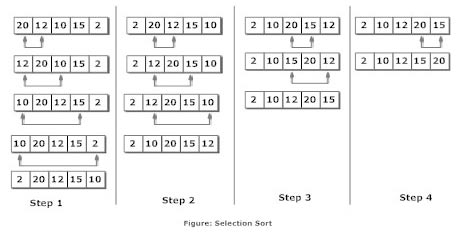

This page covers sorting algorithms, such as bubblesort, selection sorts and quicksort.
Bubblesort is a very simple sorting algorithm. Its passes through a list, comparing the current value with the next value. If they values are out of sequence, the values are swapped. Otherwise the values remain in place and bubblesort moves up on one value before making another comparison. The sort loops and continues to pass over a list until it does not have to make any changes. The list is then sorted. A visual example is shown below.
The above describes an array which has had bubblesort passed over it once. As seen by the final array, more passes of bubblesort is required to fully order the array. Therefore, it can be said that bubblesort is not a very efficent sort, as it takes many passes to sort. For example, the best case for 100 elements in order takes 100 comparisons. However, if the worst case is appiled, bubblesort will need to make 10,000 comparisons to generate the sorted output.
Selection sort works by dividing a sequence into sorted and unsorted regions then by iterating over the divided segments and searching for the smallest element in one section and swapping it with the current element.The smallest element is selected from the unsorted array and swapped with the leftmost element, and that element becomes a part of the sorted array. This process continues moving unsorted array boundary by one element to the right. This may sounds more complicated that it seems, so looking at the diagram below may help.

Above is a visual reperesentation of selection sort. Although this algorithm is different to bubblesort, it still isnt the best for large datasets. In the next section, where we take a look a complexity, you will see they share a similar Big O.
In comparison to the previous algorithms, quicksort is far superior. Where Bubblesort and Selection sort are slow and ineffective, Quicksort shines. Quicksort is well utilised in the real world due to its efficency due to taking a divide and conquer approach. Based on partitioning of array of data into smaller arrays, a large array is partitioned into two arrays one of which holds values smaller than the specified value, say pivot, based on which the partition is made and another array holds values greater than the pivot value. This happens recursivly, finding the pivot of each sub-list utill all lists contain only one element. Below it can be seen how to find a pivot point, and this is the recurisve process that sorts the list.

Now is time to answer a question on sorting algorithms!